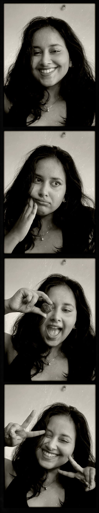

Refining Content in the Product - SuccessFactors
Rewriting confusing error messages, empty states, and labels in enterprise software so they're actually clear.
Content Designer · Technical Writer · Freelance Conspiracy Theorist
Designing content, systems, and tools that make complex software easier to understand
Selected work
Rewriting confusing error messages, empty states, and labels in enterprise software so they're actually clear.
An AI Figma plugin that checks interface text for clarity, grammar, and tone in one click.
Shaping the voice of an AI health app and turning it into a style guide the team can reuse.
An in-product walkthrough that guides recruiters through a complex setup without breaking.
A dashboard that shows content teams what needs documenting across 25+ products each release.
CRIT Award-winning D&D actual-play podcast, Pride@SAP sensitisation work, and guest appearances on the SAP ANZ podcast.
Writing
We A/B tested this.

Hi, I'm Devyani!
For 4+ years at SAP, I've worked across in-product microcopy, structured documentation, enablement content, and AI-assisted content workflows. I have a habit of turning recurring problems into systems (check out my projects for more on that ;) )
My background is in technical writing, but I'm increasingly interested in the space beyond documentation - how language can shape an entire product experience.
When I'm not reading or writing, you can find me attempting to hobbymaxx by doing other nerdy things like running Dungeons & Dragons campaigns, participating in quizzes, woodworking, trying to paint (emphasis on trying), and my newest hobby - taking apart old electronics to build a cyber deck!
"Devyani has provided consistent and prompt support in managing Compliance topics. Her dedication to meeting tight deadlines, especially for compliance form updates, has been crucial, and we truly appreciate her reliability in handling these challenges."
"The elevated sensitisation charter and offerings we now boast of are in no small part Devyani's doing. It speaks highly of her potential — understanding context, finding her voice, and using that voice to herald change that people with much more experience often cannot envision."
"Devyani worked under several beats and added real value to the platform. Articles like 'Menstrual Festivals: Yet Another Means To Celebrate Systemic Patriarchy?' were among the best read on the platform — their reportage was comprehensive, consistent, and often featured in our staff picks."
Got a project that needs content or design? I'm open to collaborating — let's chat!
.png)